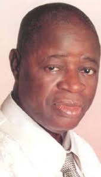
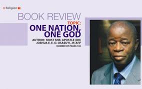
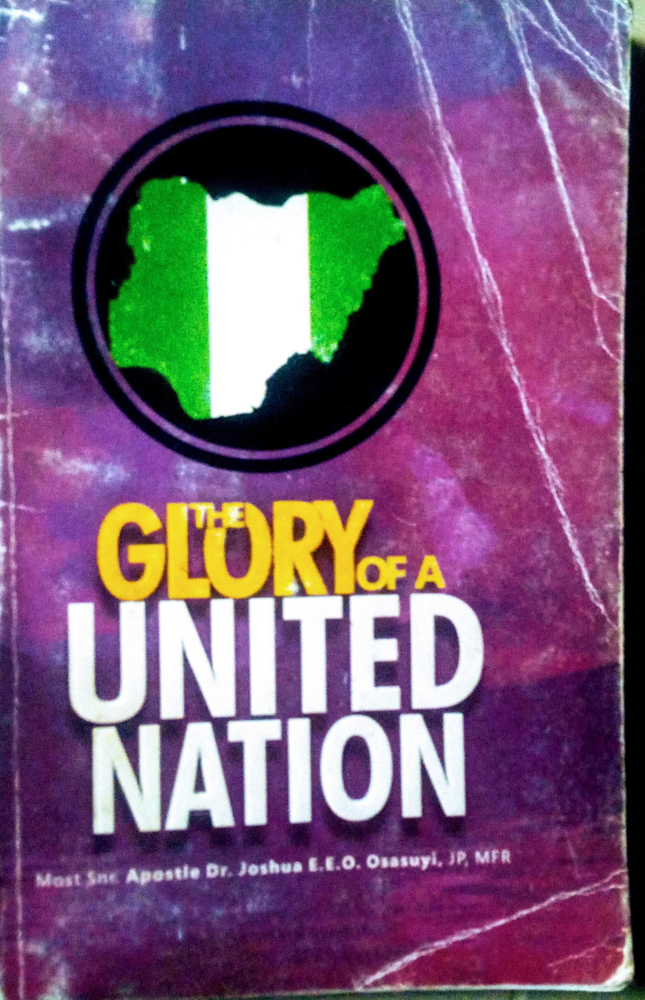

Most Senior Apostle Dr. Joshua Osasuyi JP, AFP, MFR
An Apostle of Truth, A Spiritual Leader, Major General in the International Chaplains Corps, Doctor of Divinity
And you shall know the Truth, and the truth Shall set you free- Snr Apostle J.E.E.O Osasuyi

15th of March 1937 - 11th of July 2018
A breif timeline of event in Apostle Osasuyi's Life:
Most Senior Apostel Joshua Edenabuohien Ehimwenma Osemweigie Osasuyi was born on March 15th in Erua Edo State to Osasuyi and Edomwande Orumwense.
He attended C.M.S school, Erua where he obtained Standard School leaving certificate. He also attended Agric college, Akure in 1958 - 1959.
In 1963, Most senior Apostle Osasuyi answered the glorious call of God to serve as a Minister in the Lord's vineyard.
In April 1963, Apostle Osasuyi became a station Minister in Christ Chosen Church of God first in his home town at Erua. Thereafter he served in various capacities of responsibilities as group head and District Head respectively in different Stations all over Nigeria. Divisons where created for effective administration and He was saddled with the responsiblity of overseeing many of these branches as Divisional, Area/Zonal Head.
Late Senior Apostle Dr. Joshua Osasuyi passed through the rank and file of the pastoral ladder of Christ Chosen Church of God since he answered the call of God in 1963. He maintained an unbroken chain since he joined the ministry in 1963; receiving his first promotion in 1967, his second in 1972, the third in 1978, the forth in 1993, the fifth in 2002 and the ultimate ladder as the Most Senior Apostle of the church on the 1st of september 2007.
Most Senior Apostle Osasuyi was also appointed with some official responsibilities which include;
1. Chairman, Land and Building, Benin Area;
2. Director, Estate Department;
3. Director, Health services;
4. Supervisor to Upper-Lawani/Iguobazuwa Divisions.
5. Chairman, Disciplinary committee;
6. Director of Administration;
7. Director of Lands and Housing;
8. Vice Chairman Church Council and Trustee of Christ Chosen Church Of God Worldwide.
He Took the Gospel to Great Britain-London, Manchester, Dublin in ireland; New york and New Jersey in the US, Toronto, Montreal and Edmonton in Canada and a host of other cities in Italy.
Some of his awards of Honours include:
1. In 1994, the Edo state government awarded him Justice of Peace(JP)
2. In 2000, he bagged the prestigious award of Doctor Of Divinity from J.B.C University and seminary, United State of America.
3. In 2003 he recived double honours for patron from Gospel Singers(Edo state chapter) and Boys Scout of Nigeria.
4. On the 23rd of July 2008, He was awarded the Development in Peeople Merit Award(DINMA) in Religion at Abuja.
5. On saturday the 18th of October 2008, he was conferred with the award of an Ambassador for Peace(AFP) to the United Nations.
6. In a similar development, the National Association of Nigerian Students(NANS) conferred on the Apostle the award of Grand commander of the Nigerian Students(GCON) on Thursday the 1st of October, 2009.
7. On the 14th of November, 2011 at the International Conference, he was conferred a National Honour of Member of the Federal Republic of Nigeria(MFR) by the then president of Nigeria Goodluck Ebele Jonathan.
Most Senior Apostle Dr. Joshua Osasuyi got married to his amiable wife - Most Senior Rev(Mrs) Grace Imuwahen Osasuyi in 1965, who gave him beautiful and handsome childen and grandchildren to the glory of God.
For the record, it must be pointed out that this man of God who was in the Lord's Royal vineyard for 55 years was a patient, unassuming, committed and focused cleric who is an inspiration to the present generation and upcoming ministers of God
However on Wednesday the 11th of july 2018 at the age of 81, the detribalized cleric and apostle of Unity was called home to join the saints triumphant.
Some of the Books he published:

One God, One Nation.

The glory of a Nation
To countinue his philantrophic Act, a Charity Organization was created in his name; The Apostle Osasuyi Foundation click Here to view.